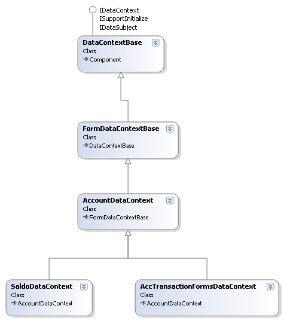

Основными классами в библиотека DataManipulation.dll являются классы контекстов данных (рис. 1).

Рисунок 1. Диаграмма класов контекстов данных
Эти классы служат для управления данными. Они включают в себя работу с БД, расчеты сумм, добавление новых записей, удаление, и т.д.
Прмечание: Все операции касательно изменений в источнике данных должны реализовыватся в данном классе.